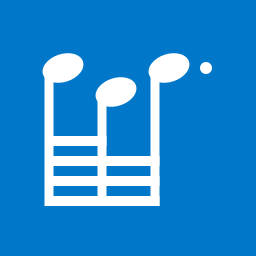
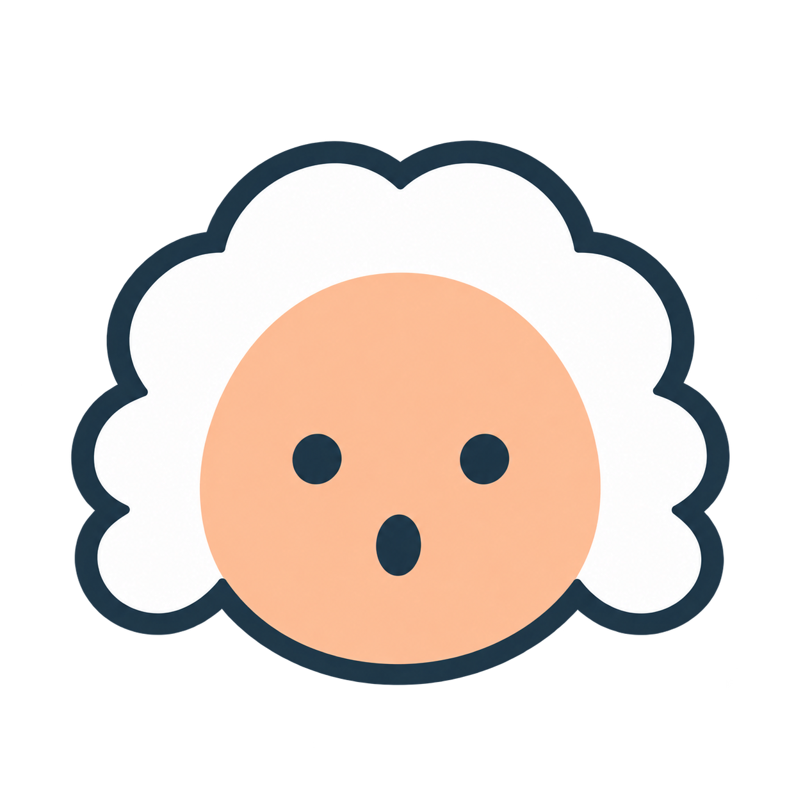

DDIRORI / ROUND 04 / 2026.10.22
띠로리
Primary #0077C8기둥 접점을 맞춘 음형 · 놀란 바흐 · 파랑 기준 팔레트


파랑
#0077C8하늘
#A8D4E5살구
#F3BB9B잉크
#203849바탕
#F7FBFE흰색
#FFFFFF파랑으로 또렷하게, 하늘색으로 부드럽게, 살구색으로 따뜻하게. 넓은 작업 면은 밝은 중립색을 사용한다.
머리와 기둥을 매끈하게
음표머리를 왼쪽으로 옮겨 기둥 윗모서리가 머리 밖으로 드러나지 않게 맞췄다. 맨 위 선만 짧고, 아래 세 선은 끝까지 이어진다. 오른쪽 기둥과 마지막 점도 유지했다.
접점 확대 보기
소형은 머리 위치를 따로 조정했다. 현재는 브랜드 형태 연구이며 실제 기기에서 점·픽셀 밀도를 추가 확인한다.
같은 팔레트를 화면에 쓰는 방식
연습
오늘도 한 소절
밝은 면과 짙은 글자. 파랑은 가장 중요한 행동에 쓴다.
다크 파생안 · 검토 중
오늘도 한 소절
짙은 바탕에서는 같은 계열의 밝은 파랑으로 행동을 표시한다.
- 하늘색·살구색 위에는 짙은 잉크 글자를 쓴다.
- 살구색은 친근한 강조에 제한하고 주의 상태와 겸용하지 않는다.
- 성공·주의·오류에는 색과 함께 글자·아이콘을 붙인다.
- 악보 지면은 흰색·검정이 기본이다.
흰색/파랑 4.70:1 · 잉크/하늘색 7.67:1 · 잉크/살구색 7.19:1. 선언한 색 쌍의 계산이며 전체 접근성 검수 결과는 아니다.